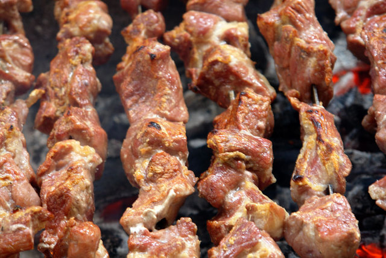

<!--1) კომენტარის სახით ახსენით თუ რა არის empty თეგი,ასევე ახსენით რა არის container თეგი -->
 <!-- container tag ეს არის tag რომელსაც აქვს როგორც გამხსნელი ისე დამხურავი tag -->
  <!-- empty tag- ეს არის tag რომელსაც მხოლოდ გამხსნელი tag აქვს  -->

   <!--2)კომენტარის სახით ახსენით თუ რატომ არის საჭირო head და body თეგები -->
   <!-- head tag - იგი საჭიროა რომ საიტის (თავი) შევქმანთ ანუ აქ იწერება რასაც საიტზე ვერ ვხედავთ  -->
<!-- body tag - ეს არის tag რომელიც საიტის (ტანის) შესაქმნელად გამოიყენება ანუ ყველაფერი რასაც ვხედავთ საიტის body tag ში იწერება-->

<!--3)კომენტარის სახით ახსენით თუ რომელი თეგის გამოყენებით ვამატებთ ჩვენს ვებსაიტზე სურათებს,ასევე მიუწერეთ თუ რომელი თეგია სურათისთვის განკუთვნილი თეგი container თუ empty და რატომ  -->
<!-- ჩვენ სურათის საიტზე დამატება img tag ის მეშვეობით შეგვიძლია იგი მიეკუთვნება empty tag ს რადგან მას არ გაანია closing tag  -->

<!--4)კომენტარის სახით ახსენით თუ რა არის img თეგში მყოფი alt ატრიბუთი და რაში ვიყენებთ მას-->
<!-- alt tag ი გამოიყენება როგორც ჩამნაცვლებლად მაგ თუ ჩვენი link დაზიანდება ჩვენი მითითებული სურათი რომელიც alt ატრიბუტში გვიწერია ჩაანაცვლებს მას -->

<!-- 5)შექმენით ვებსაიტი სადაც გექნებათ მოთავსებული 3 ფოტო,პირველი ფოტო იყოს 19 ნაოჭიანი ხინკლის ფოტო :D🥟,მეორე იყოს კაი ცხელ ცხელი მწვადის ფოტო🥩🍖 და მესამე იყოს,შემწვარი კარტოფილის ფოტო🥔🥔(გადმოიწერეთ ფოტოები და მასე დაამატეთ თქვენს ვებსაიტზე)<3 -->




<!--6)შექმენით ტანსაცმლის მაღაიზიის ვებსაიტი,მთავარი სათაური უნდა იყოს თქვენი მაღაზიის სახელი,შემდეგ უნდა გქონდეთ შესაბამისი ტანსაცმლის სახელი მაგ:შარვალი... ეს ტანსაცმლის სახელი მოთავსეთ შედარებით პატარა ზომის სათაურში, ამ სათაურის ქვემოთ უნდა იყოს ამ ტანსაცმლის ფოტო,ამ ფოტოს ქვევით უნდა გქონდეთ ამ ტანსაცმლის აღწერა პარაგრაფის სახით,ამ პარაგრაფის ქვემოთ კი უნდა გქონდეთ ღილაკი,რომელშიც ეწერება Buy Now, გააკეთეთ რამოდენიმე ტანსაცმელზე,მაგ:შორტი მაისური ფეხსაცმელი,ყველაფერს თავი მოუყარეთ ერთ გვერდზე და ზემოთ მოცემული თანმიმდევრობა არ დაარღვიოთ,ასევე გამოიყენეთ body და head თეგები და დაიცავით ინდენტაცია თქვენი ვებსაიტის კეთების დროს,ასევე გამოიყენეთ ნასწავლი თეგი რომელიც გვეხმარება რომ შევცვალოთ საიტის სახელი(სათაური),head და body თეგის გარეშე,ასევე ინდენტაციის გარეშე შესრულებული დავალებები არ იქნება მიღებული😁)  -->